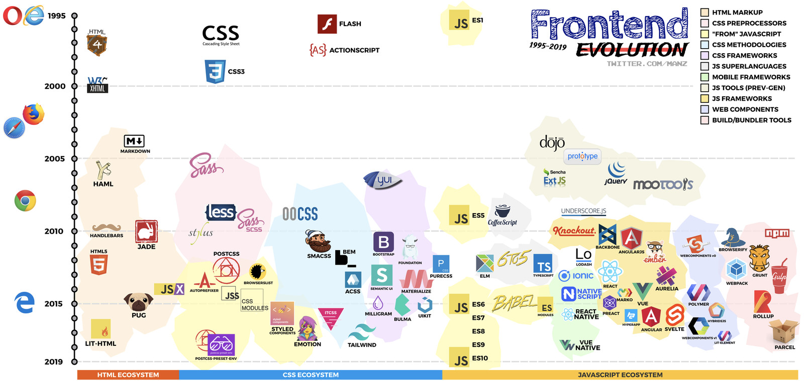
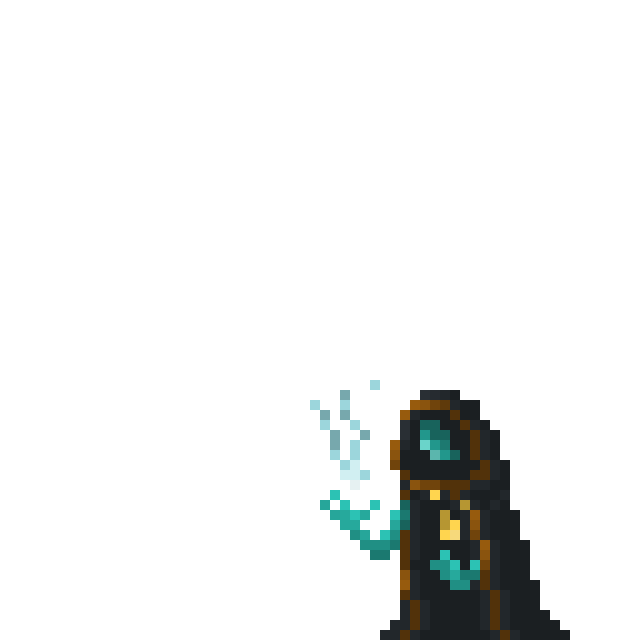

Я фронтенд-разработчик в ITFB Group. Разрабатываю интерфейс b2b
сервисов для компаний Сибур, Мегафон, ВТБ. Сейчас я
мидл-разработчик, но собираюсь в этом году уйти в
IT-архитекторы. Работаю в айти уже 6 лет, из них фронтендом
занимаюсь последние два года. До этого работала по профессии —
специалистом информационной безопасности.
Кто такой фронтендер и чем он занимается?
Фронтенд-разработчиками называют программистов, которые отвечают
за создание внешней стороны (англ. front end) веб-сайтов. Это
клиентская часть сайта, с которой пользователь непосредственно
взаимодействует на своем компьютере или телефоне (клиенте).
Мы переводим фантазии дизайнеров в код.
Мы создаем интерфейсы💅
С чего начать и что читать?

С чего начать и что читать?
Три кита разработки под браузеры:
HTML⬅️
CSS⬅️
JavaScript
Чек-лист обучения
Как работает веб
Среда разработки
Основы HTML и CSS
Система контроля версий Git
Node.js, NPM
Сборщики модулей, Webpack
Препроцессоры CSS и HTML
Язык программирования JavaScript
Стиль кода и линтеры
Изучение фреймворка/UI-библиотеки
Автоматическое тестирование
Углубленное
Базовый набор
Любой бесплатный курс по HTML и CSS
Справочник Mozilla (MDN) или форум Stackoverflow
Выберите программу для разработки: Sublime Text или
VSCode
Инструменты разработчика в браузере
Препроцессор SCSS
Сборщик Gulp
GitHub
Какие трудности могут быть?
Изучение фреймворков вместо базовых знаний
Обучение — это труд, самодисциплина и много времени
Копирование чужого кода дорого обходится в дальнейшем
Задавайте глупые вопрсоы всем подряд
Ищите сообщества
Не паникуйте, все будет хорошо!

Нужны ли платные курсы или высшее образование?
Нужно ли высшее образование? НЕТ Нужно ли проходить платные курсы? НЕТ
Но если хотите, то:
HTML Academy
Hexlet
Школа Яндекса
Udemy
Поиск работы и собеседования
У вас будет много собеседований
Не бойтесь подаваться на резюме, если не подходите под
требования 100%
Обращайтесь напрямую в компании, которые вам нравятся